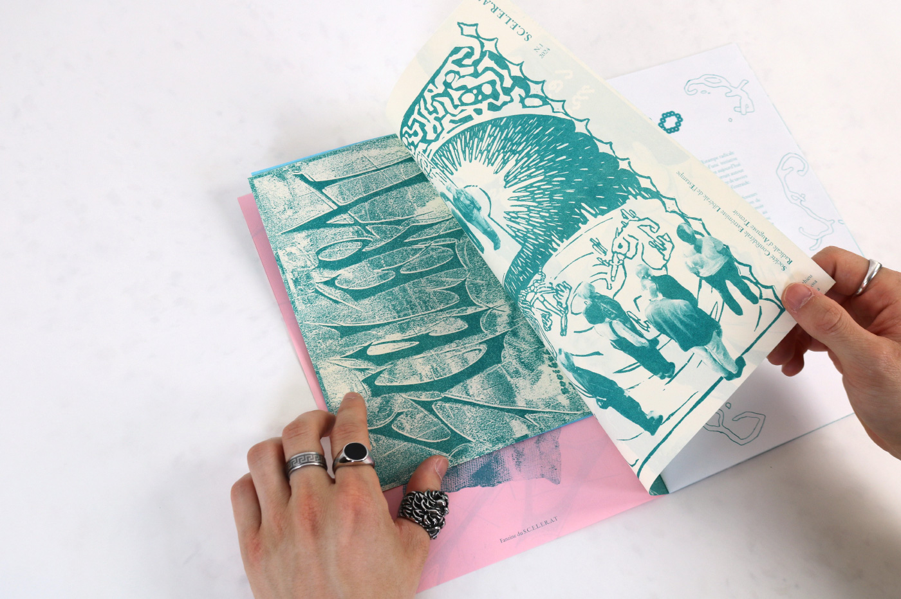
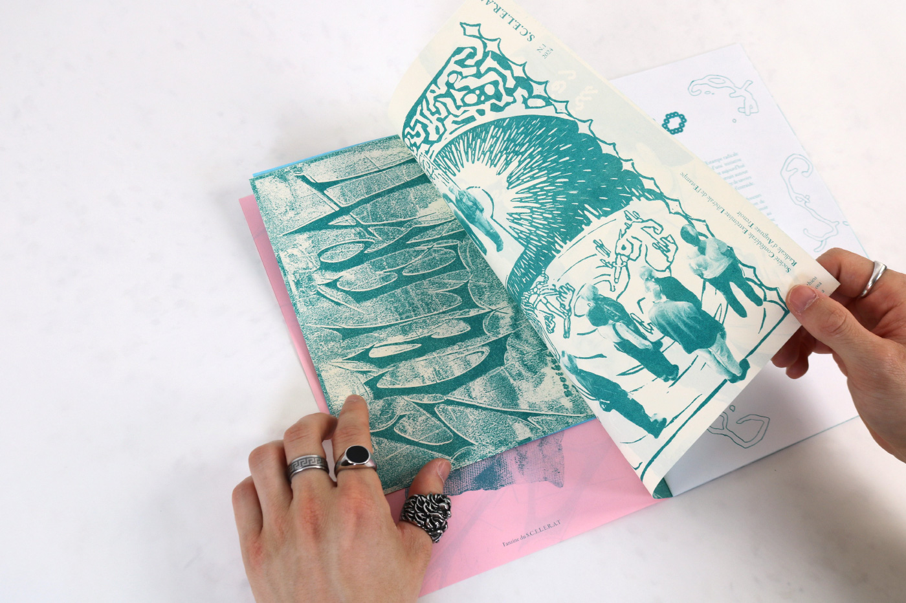

Ce projet découle d’un travail en équipe lors d’un Workshop. La demande était de concevoir un fanzine en risographie sur le thème des clubs scolaires. Nous avons choisis la pratique de la gravure.
Loin de l’image traditionnelle et rigoureuse souvent associée à cette pratique, Scélérat explore une esthétique osée et décalée. À travers des mises en page qui se dégradent progressivement, le fanzine reflète l’essence même de la gravure, où l’encre s’efface après chaque impression, créant un univers visuel qui évolue vers la bizarrerie et l’improbable.

 
